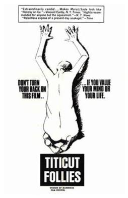

Frederick Wiseman
1967
84 minutes
This is a documentary about a mental institution for the criminally insane, which takes its name from a talent show put on by the staff and patient-inmates. If this sounds like a joyful romp to you, then you're in for some serious disappointment! Brace yourself for the riveting "feeding tube" scene--you'll definitely be squirming on the end of your seat.
You have never been to a mental institution for the criminally insane, but you have been to grade school. Once in awhile the staff there would think it a good idea to put on a talent show for the parents and families to attend. You got picked to put on a performance of Allan Sherman's "Hello Muddah, Hello Faddah", which went over decently well even though it wasn't really a Henny Youngman borscht belt humor kind of crowd. You had a few of Allan Sherman's albums on vinyl, which you sang along to regularly. Someday when you finally flip your shit and get committed, maybe you'll be docile enough for them to put you on stage for an encore performance.
One of your friends wrote a more recent (nonfiction) book taking a look at what mental institutions for the criminally insane are like in current days, using extensive interviews and correspondence with a man who murdered his family a few decades ago and was committed for his crimes. It sounds like the worst and most brazen of the abuses depicted here shamelessly on camera have been cleaned up. Or at least they have been heavily medicated and given a hospital gown to shuffle around in for a very mild boost in dignity.
Stay healthy. The world is a cruel place for the sick and helpless.
Time to choose something different: